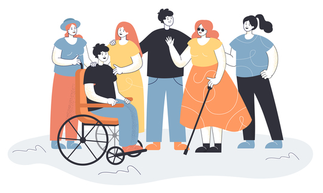

Accessibility Things
Plataforma de E-commerce Accesible para Productos de Asistencia
Andres Calvo
2024-01-01
Accessibility Things
Plataforma de e-commerce especializada en productos de accesibilidad

Agenda
01
Introducción y Objetivos
02
Tecnologías Utilizadas
03
Arquitectura Técnica
04
Funcionalidades Implementadas
05
Características de Accesibilidad
06
Patrones de Usabilidad
07
Demostración de la Aplicación
08
Conclusiones y Aprendizajes
Objetivo General
Desarrollar un sitio web destinado a facilitar tanto la comercialización como la búsqueda de productos específicos para satisfacer las necesidades de las personas con discapacidad, personas adultas mayores, embarazadas y otros grupos contemplados en la Ley 7600, considerando una experiencia de usuario accesible, conveniente y segura.
Objetivos Específicos
- Diseñar una plataforma accesible e intuitiva para la gestión de artículos orientados a personas con discapacidad.
- Implementar funciones de registro, inicio de sesión, perfil de usuario, y publicación de productos.
- Permitir a los usuarios consultar estadísticas de ventas y administrar la información de sus productos.
- Ofrecer a los compradores una experiencia completa de navegación, búsqueda, carrito y envío de artículos.
- Aplicar los principios de patrones arquitectónicos, de usabilidad y las normas WCAG para desarrollar el prototipo funcional.
Objetivos Técnicos
- Implementar una arquitectura backend robusta con FastAPI y PostgreSQL
- Desarrollar un frontend accesible siguiendo estándares WCAG 2.1/2.2 AA
- Aplicar patrones de diseño arquitectónicos y de software
- Garantizar la usabilidad para usuarios con diferentes capacidades
- Crear un MVE de un sistema de comercio electrónico funcional y escalable
¿Qué es Accessibility Things?
Definición del Proyecto
Accessibility Things es una plataforma creada para facilitar la compra y venta de artículos enfocados en mejorar la calidad de vida de personas con discapacidad, adultos mayores y otros grupos contemplados en la Ley 7600.
Propósito
- Facilitar el acceso y centralizar la oferta de productos de asistencia.
- Promover la inclusión, la independencia y mejorar la calidad de vida de los usuarios.
- Crear un espacio digital que garantice una experiencia de usuario accesible e intuitiva.
Enfoque
Accesibilidad Universal como principio fundamental del diseño.

Tecnologías Utilizadas
Diseño y Frontend
- Figma: Herramienta principal para el diseño de la interfaz y la creación de prototipos interactivos de alta fidelidad.
- HTML5 Semántico: Para construir una estructura accesible desde la base.
- CSS3 Avanzado: Para crear estilos responsivos y cumplir con criterios de accesibilidad visual.
- JavaScript (ES6+): Para la funcionalidad interactiva y el manejo de la lógica del lado del cliente.
Backend
- FastAPI: Framework web para la creación de la API.
- PostgreSQL: Como base de datos relacional robusta.
- SQLAlchemy: ORM para el mapeo de objetos y el manejo de datos.
- JWT: Para la gestión de autenticación segura basada en tokens.
Infraestructura y Despliegue
- Docker & Docker Compose: Para la containerización y orquestación de los servicios de la aplicación.
- Alembic: Para gestionar las migraciones de la base de datos.
Arquitectura del Sistema

Arquitectura Frontend - Módulos
El frontend implementa una arquitectura basada en módulos especializados, donde cada uno tiene responsabilidades bien definidas para asegurar un código organizado y mantenible.
- Presentation Layer (Capa de Presentación)
- Responsable de la estructura visual y el estilo de la interfaz.
- Compuesta por HTML semántico, CSS para estilos y plantillas dinámicas para el contenido.
- UI Controller Layer (Capa de Controlador de UI)
- Maneja toda la interacción del usuario, como clics y eventos del teclado.
- Orquesta la manipulación del DOM y el renderizado de los componentes en la página.
- Data Management Layer (Capa de Gestión de Datos)
- Actúa como el estado central de la aplicación, gestionando la información.
- Administra tanto los datos locales (carrito, sesión de usuario) como los datos que se obtienen del backend.
- API Communication Layer (Capa de Comunicación con API)
- Encapsula toda la comunicación HTTP con la API del backend.
- Es responsable de gestionar los tokens de autenticación JWT y manejar los errores de conexión.
- Accessibility Layer (Capa de Accesibilidad)
- Contiene la lógica para los controles de usuario, como el modo de alto contraste y el ajuste del tamaño de fuente.
- Asegura el cumplimiento de las pautas WCAG y la correcta implementación de atributos ARIA.
Arquitectura Backend - Capas
El backend sigue una estricta arquitectura en 5 capas, donde cada una tiene una responsabilidad única para mejorar la mantenibilidad y la testabilidad del código.
- API Layer (Capa de Presentación)
- Responsable de exponer los endpoints de la API REST y manejar las solicitudes HTTP de los clientes.
- Gestiona la validación de datos de entrada y la serialización de las respuestas (DTOs).
- Service Layer (Capa de Lógica de Negocio)
- Contiene toda la lógica de negocio de la aplicación y las reglas que no pertenecen a una entidad específica.
- Coordina las operaciones entre diferentes repositorios para realizar tareas complejas.
- Repository Layer (Capa de Acceso a Datos)
- Implementa el Patrón Repositorio para abstraer y centralizar toda la comunicación con la base de datos.
- Proporciona una interfaz limpia para realizar operaciones CRUD (Crear, Leer, Actualizar, Borrar) sobre las entidades.
- Model Layer (Capa de Dominio)
- Define las entidades del sistema (como Usuario, Producto, Orden) a través de los modelos del ORM de SQLAlchemy.
- Establece las relaciones y restricciones entre las diferentes tablas de la base de datos.
- Configuration & Infrastructure Layer
- Gestiona la configuración de la aplicación, como la conexión a la base de datos y las variables de entorno.
Base de Datos y Persistencia
El sistema utiliza PostgreSQL como motor de base de datos, con un esquema relacional gestionado a través de SQLAlchemy para asegurar la integridad y consistencia de los datos.
Modelo Relacional
- El esquema se organiza en torno a entidades principales como Usuario, Producto, Orden y Categoría.
- Las relaciones complejas (muchos a muchos) se manejan con tablas de enlace, como las que conectan productos con sus colores e imágenes.
Patrones de Persistencia
- Se utiliza el ORM de SQLAlchemy, que implementa patrones de diseño clave:
- Active Record: Donde los modelos no solo almacenan datos, sino que también pueden encapsular comportamiento.
- Unit of Work: SQLAlchemy gestiona automáticamente las transacciones como una unidad de trabajo, asegurando que todas las operaciones se completen con éxito o ninguna lo haga.
Gestión de Cambios (Migraciones)
- El versionado y la evolución del esquema de la base de datos se gestionan con Alembic.
- Este enfoque permite aplicar cambios de forma controlada, segura y reversible, lo cual es fundamental para el mantenimiento a largo plazo.
Funcionalidades Implementadas
Para el proyecto, nos enfocamos en desarrollar un Producto Mínimo Viable (MVP) que validara los flujos esenciales para compradores y vendedores.
Gestión de Usuarios y Autenticación
- Registro y Login: Sistema de creación de cuentas e inicio de sesión seguro utilizando tokens JWT.
- Gestión de Perfil de Usuario: Los usuarios pueden ver y editar su información personal desde su panel.
Flujo de Compra
- Catálogo y Detalle de Productos: Visualización de los productos disponibles con su información completa.
- Gestión de Carrito de Compras: Funcionalidad para añadir, modificar y eliminar productos del carrito.
- Proceso de Checkout: Flujo para que el comprador finalice la orden ingresando sus datos de envío.
- Historial de Órdenes: Los compradores pueden consultar un resumen de los pedidos que han realizado.
Patrones de Diseño Implementados
El sistema implementa patrones de diseño probados para garantizar un código mantenible, escalable y robusto tanto en el backend como en el frontend.
Patrones Clave del Backend
- Arquitectura en Capas: Organiza el código en capas (Presentación, Lógica, Datos) para una máxima separación de responsabilidades.
- Repositorio: Centraliza y abstrae el acceso a la base de datos (CRUD), desacoplando la lógica de negocio de la persistencia.
- Inyección de Dependencias: Usada por FastAPI para proveer recursos a los endpoints (como la sesión de BD), lo que simplifica las pruebas.
- Data Transfer Object (DTO): Define esquemas de datos con Pydantic para validar y serializar la información de la API de forma segura.
Patrones Clave del Frontend
- Módulo y Singleton: Organiza el código en módulos y usa Singleton para tener una única fuente de verdad para el estado de la aplicación.
- Observer: Permite que la interfaz de usuario reaccione a cambios en los datos (ej. en el carrito) de forma desacoplada.
- Strategy: Aplica diferentes estrategias para manejar datos, como obtener productos de la API y gestionar el carrito de forma local.
- Progressive Enhancement: Asegura la funcionalidad con HTML básico y la mejora progresivamente con CSS y JavaScript para un acceso universal.
Patrones de Diseño Implementados
El sistema implementa patrones de diseño probados para garantizar un código mantenible, escalable y robusto tanto en el backend como en el frontend.
Patrones Clave del Backend
- Arquitectura en Capas: Organiza el código en capas (API, Lógica, Datos) para una máxima separación de responsabilidades.
- Repositorio: Centraliza el acceso a la base de datos (CRUD), desacoplando la lógica de negocio de la persistencia.
- Inyección de Dependencias: Usada por FastAPI para proveer recursos a los endpoints (como la sesión de BD), lo que simplifica las pruebas.
- Data Transfer Object (DTO): Define esquemas con Pydantic para validar y serializar de forma segura los datos de la API.
Patrones Clave del Frontend
- Módulo y Singleton: Organiza el código en módulos y usa Singleton para garantizar una única fuente de verdad para el estado de la aplicación.
- Observer: Permite que la interfaz reaccione a cambios en los datos (ej. en el carrito) de forma desacoplada y eficiente.
- Strategy: Aplica diferentes estrategias para manejar los datos, como obtener productos desde la API y gestionar el carrito de forma local.
- Progressive Enhancement: Asegura la funcionalidad con HTML básico y la mejora progresivamente con CSS y JavaScript para un acceso universal.
Despliegue e Infraestructura
El entorno de desarrollo está diseñado para ser desacoplado y replicable, utilizando tecnologías de containerización para separar los servicios.
Containerización con Docker
- Backend Aislado: La API del backend se ejecuta dentro de un contenedor de Docker, lo que garantiza que el entorno de la aplicación sea consistente y esté aislado del sistema operativo anfitrión.
- Dependencias Gestionadas: El
Dockerfiledel backend se encarga de instalar todas las dependencias de Python necesarias, creando una imagen portable y autónoma.
Orquestación con Docker Compose
- Gestión de Servicios: Se utiliza
docker-composepara definir y ejecutar la aplicación multi-contenedor, que incluye el servicio del backend y el servicio de la base de datos PostgreSQL. - Comunicación y Redes: Docker Compose configura automáticamente una red interna, permitiendo que el backend se comunique de forma segura y sencilla con la base de datos.
Entorno de Desarrollo Local
- Separación Frontend-Backend: Durante el desarrollo, el frontend se sirve de forma independiente a través de un servidor HTTP de Python, mientras que el backend y la base de datos se ejecutan con
docker-compose. - Flexibilidad: Este enfoque permite a los desarrolladores hacer cambios en el frontend y verlos reflejados al instante, sin necesidad de reconstruir los contenedores de Docker.
Demostración de la Aplicación
Próximos Pasos
Mejoras Técnicas
- Finalización del flujo administrativo
- Optimización del flujo de vendedor
Expansión de Funcionalidades
- Móvil App: Aplicación nativa para dispositivos móviles
- Pagos Online: Integración con pasarelas de pago
- Notificaciones: Sistema de alertas y recordatorios
Accesibilidad Avanzada
- Voice Navigation: Navegación por comandos de voz
- AI Assistant: Asistente inteligente para búsquedas
- Multilingüe: Soporte para múltiples idiomas
Conclusiones Clave
El desarrollo del proyecto nos permitió llegar a las siguientes conclusiones fundamentales, basadas en el análisis de mercado, las necesidades de los usuarios y el proceso de diseño.
Conclusiones del Análisis y Diseño
- Oportunidad en el Mercado: El análisis competitivo reveló que, aunque existen múltiples plataformas, hay una clara oportunidad para diferenciarse a través de una accesibilidad superior y un flujo de compra simplificado, ya que el 75% de los competidores analizados presentan procesos de compra complejos.
- La Confianza como Factor Clave: Para los usuarios de este nicho, la confianza es decisiva. La encuesta mostró que el 87.5% de los potenciales compradores se preocupa por la calidad y procedencia de los productos.
- Nuevos Modelos de Negocio: La encuesta identificó un número mayor de potenciales compradores que de vendedores, lo que valida la oportunidad de incluir un modelo de venta de artículos de segunda mano entre usuarios para fomentar una comunidad más activa.
Logros Principales del Prototipo
- Diseño Centrado en el Usuario Real: Se diseñó una arquitectura de información y una interfaz que responden directamente a los problemas detectados en el análisis, como la desorganización de la información y la falta de datos esenciales en otras plataformas.
- Base para una Comunidad Inclusiva: El prototipo sienta las bases para una plataforma que integra las herramientas esenciales tanto para el flujo de compra como para el de venta, creando un ecosistema completo para la comunidad.
Aprendizajes del Proceso
- La Accesibilidad como Diferenciador: El principal hallazgo es que un enfoque estricto en la accesibilidad no es solo un requisito, sino el diferenciador competitivo más importante frente a otras plataformas.
- Balance entre Estética y Norma: El mayor desafío técnico y de diseño fue encontrar un balance entre una estética atractiva y el cumplimiento riguroso de los criterios WCAG, una lección clave del proceso de prototipado en Figma.
Gracias por su Atención
Preguntas y Discusión
Recordatorio
La accesibilidad web no es solo una buena práctica o una característica adicional, es un derecho y un principio del diseño fundamental que debemos garantizar en todas nuestras aplicaciones.